plot_performance_and_fairness.Rdvisualize fairness and model metric at the same time. Note that fairness metric parity scale is reversed so that the best models are in top right corner.
# S3 method for performance_and_fairness plot(x, ...)
| x |
|
|---|---|
| ... | other plot parameters |
ggplot object
data("german") y_numeric <- as.numeric(german$Risk) -1 lm_model <- glm(Risk~., data = german, family=binomial(link="logit")) rf_model <- ranger::ranger(Risk ~., data = german, probability = TRUE, num.trees = 200) explainer_lm <- DALEX::explain(lm_model, data = german[,-1], y = y_numeric)#> Preparation of a new explainer is initiated #> -> model label : lm ( default ) #> -> data : 1000 rows 9 cols #> -> target variable : 1000 values #> -> predict function : yhat.glm will be used ( default ) #> -> predicted values : numerical, min = 0.1369187 , mean = 0.7 , max = 0.9832426 #> -> model_info : package stats , ver. 4.0.2 , task classification ( default ) #> -> residual function : difference between y and yhat ( default ) #> -> residuals : numerical, min = -0.9572803 , mean = 1.940006e-17 , max = 0.8283475 #> A new explainer has been created!#> Preparation of a new explainer is initiated #> -> model label : ranger ( default ) #> -> data : 1000 rows 9 cols #> -> target variable : 1000 values #> -> predict function : yhat.ranger will be used ( default ) #> -> predicted values : numerical, min = 0.08075992 , mean = 0.6978206 , max = 0.9983194 #> -> model_info : package ranger , ver. 0.12.1 , task classification ( default ) #> -> residual function : difference between y and yhat ( default ) #> -> residuals : numerical, min = -0.7131706 , mean = 0.002179374 , max = 0.6853413 #> A new explainer has been created!#> Creating fairness object #> -> Privileged subgroup : character ( Ok ) #> -> Protected variable : factor ( Ok ) #> -> Cutoff values for explainers : 0.5 ( for all subgroups ) #> -> Fairness objects : 0 objects #> -> Checking explainers : 2 in total ( compatible ) #> -> Metric calculation : successful #> Fairness object created succesfully# same explainers with different cutoffs for female fobject <- fairness_check(explainer_lm, explainer_rf, fobject, protected = german$Sex, privileged = "male", cutoff = list( female = 0.4), label = c("lm_2", "rf_2"))#> Creating fairness object #> -> Privileged subgroup : character ( Ok ) #> -> Protected variable : factor ( Ok ) #> -> Cutoff values for explainers : female: 0.4, male: 0.5 #> -> Fairness objects : 1 object ( compatible ) #> -> Checking explainers : 4 in total ( compatible ) #> -> Metric calculation : successful #> Fairness object created succesfully#> Fairness Metric is NULL, setting deafult parity loss metric ( TPR ) #> Performace metric is NULL, setting deafult ( accuracy ) #> #> Creating object with: #> Fairness metric: TPR #> Performance metric: accuracyplot(paf)